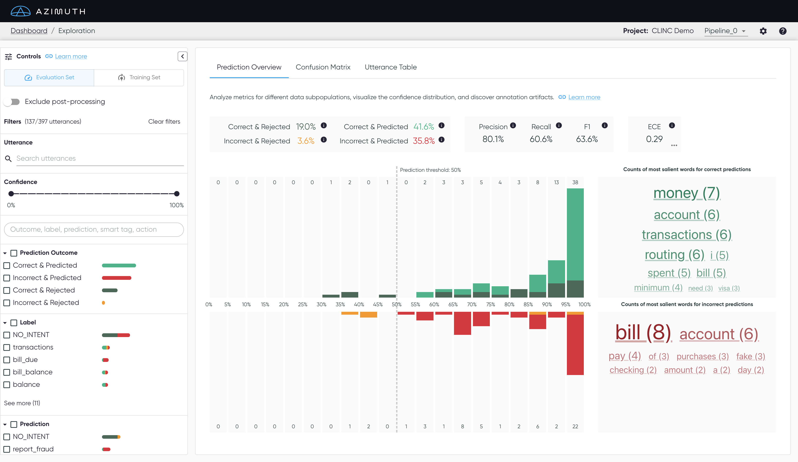
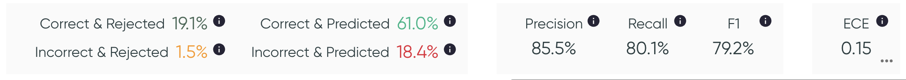
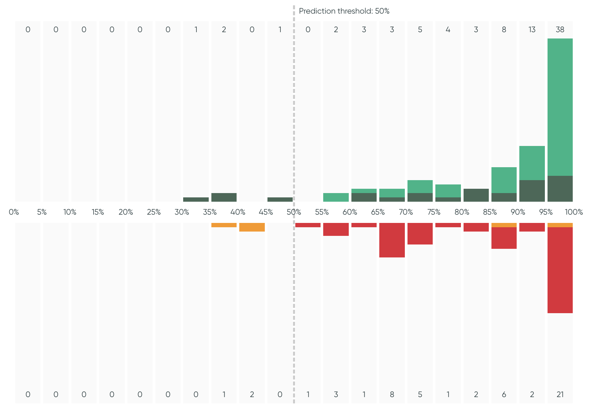
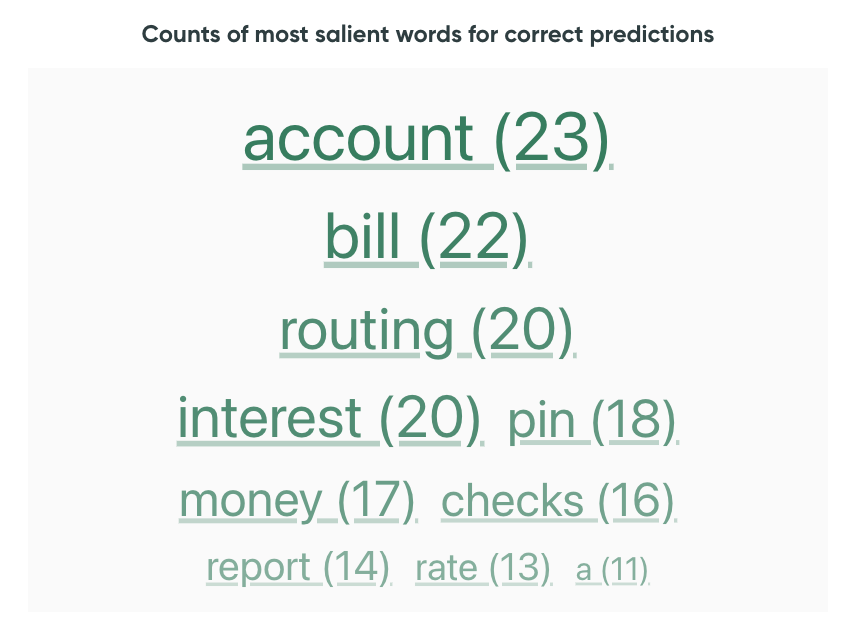

Prediction Overview
The Prediction Overview centralizes the metrics, the confidence histogram and two word clouds to show important words from the utterances.

Metrics
Assess the quality of the model with different metrics. Hover over the information icon to see more information on each metric.

- The first tile corresponds to the performance based on prediction
outcomes:
- Correct & Predicted
- Correct & Rejected
- Incorrect & Rejected
- Incorrect & Predicted
- The second tile contains the precision, recall and F1.
- The last tile shows the Expected Calibration Error (ECE), which indicates the quality of the model's calibration. An ECE of 0 means perfect calibration; A lower ECE is better. Hover the ECE to show a plot that displays the breakdown of the ECE computation per bin.
Confidence Histogram
The Confidence Histogram displays the distribution of model confidences, grouped-by prediction outcomes. The threshold, if set in the Project Configuration, is displayed on the plot.

Assess the distribution
Assess the confidence distribution by looking at the shape of the curve, the min and max values, and the ratio in each bin. Look at the histogram for any subset of the data by using the control panel.
Word Clouds
To the right of the histogram is a word cloud showing the most important words for correct and
incorrect predictions. Correct predictions include Correct & Predicted and Correct & Rejected,
while incorrect predictions include Incorrect & Predicted and Incorrect & Rejected. The word
clouds change depending on the filters and indicate the frequency of each important word across all
filtered utterances.
Clicking on a word will filter utterances that contain it. Clicking it a second
time will clear that search filter, so does the ✗ in the Search utterances filter.

What does the word cloud count?
If saliency maps are available, the word clouds show the count of salient words. A word is considered salient in an utterance if the sum of its tokens' saliency values is greater than 60% of the largest saliency value in the utterance.
If saliency maps are not available, the word clouds only show the most frequent words which are not part of a pre-defined list of stop words (from nltk.corpus).